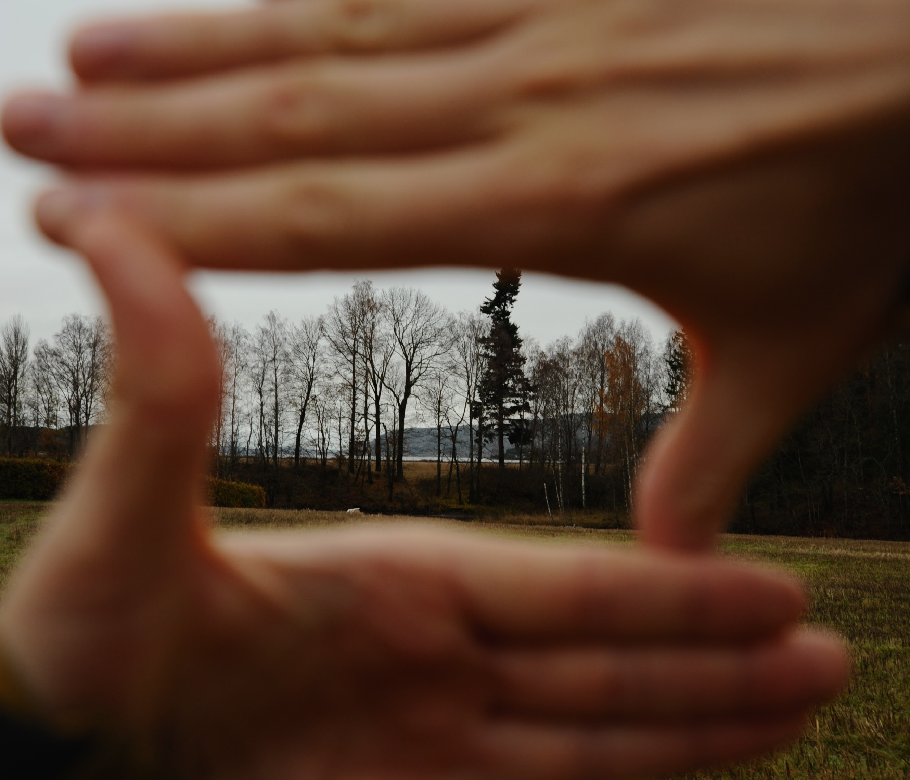
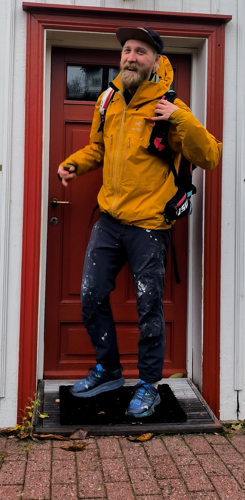
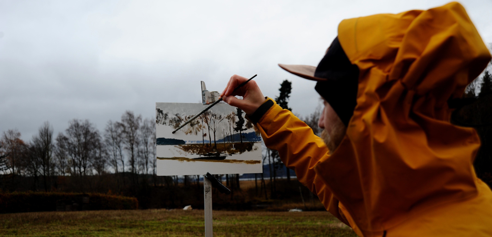
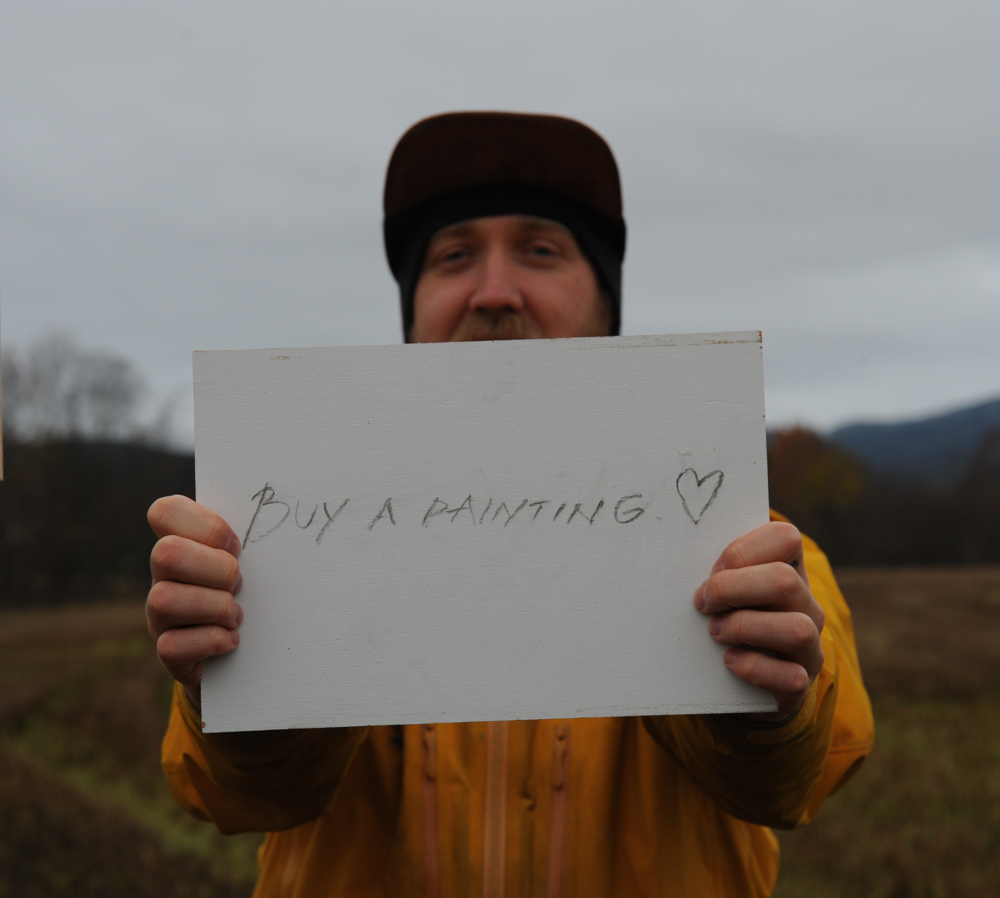
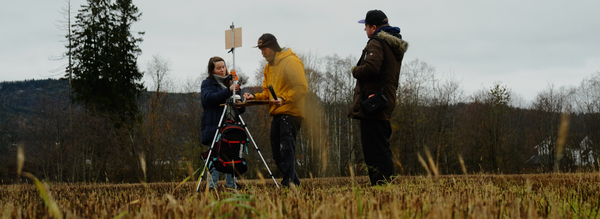

Inn i de dype skoger og fjell i Svelvik tar veien oss til Joachim Bergstrøms, eller som han kaller seg selv, Joachim "Flash" sitt bosted. En sjarmerende arbeiderbolig fra 1940, nå omskapt til et kunstnerens tilfluktssted. Flash ønsker oss velkommen med kaffekopper, og atmosfæren er mettet av duften fra maleriene som fyller rommet.
Joachim reflekterer over “Plain air” sin stilling i Norge sammenlignet med land som England, Frankrike og Italia, hvor landskapsmaling har et større rom og anerkjennelse. Han peker på klimaet og folks motvilje mot å være ute som en mulig årsak.
Hvem er Joachim Flash?
Flash er livlig og ivrig, en vert som åpner opp sitt hjem og historie for oss. En reise fra hjemløshet til å eie et hus, nå delt med sin samboer og sin nyfødte. "Flash" er ikke bare et kallenavn, det er en personlighet som lyser opp, selv i de dypeste skyggene.
"Nok snakk! Håper dere har tatt på dere varme klær."
Vi forlater huset i Svelvik, iført varme klær og utstyrt med et kamera for å dokumentere vår reise sammen med Flash. Den grå og regnfulle dagen blir vårt lerret, og vi er klare for å følge maleren ut i naturen.

Naturen som sitt lerret
Landskapsmaling, for Flash, er ikke bare penselstrøk på lerret. Det er et ritual. Han avslører hemmelighetene bak kunstnerens prosess - treplater grunnet med gesso, en blanding av kanin-hud-hårs lim og kalsiumkarbonat. En omfattende prosess som krever tålmodighet og dedikasjon, og som skiller seg fra den moderne tilnærmingen til kunst som får kunstnerstipend og støtte fra staten er personer som får betalt for å “pisse på en murstein” som sitt levebrød - dette kan oppleves som urettferdig når man legger mye tid og energi i kunstformen.

Rikdom og anerkjennelse?
Det store spørsmålet henger i luften. Hva driver en kunstner som velger en form som ikke alltid blir anerkjent? Flash ler og reflekterer. "Rikdom? Jeg tviler," sier han, og sammenligner sitt valg med de store kunstnerne som Van Gogh, som først opplevde berømmelse etter sin død. Er det meditasjon, eller er det bare lidenskap? Flash gir ikke klare svar, men inviterer oss til å utforske hans verden.

Et innblikk i Joachims Verden
Vår samtale med Flash gir oss et unikt innblikk i hans nye liv og kunstneriske reise. Joachim gir raskt inntrykk at kunsten har reddet hans.
"Hvis jeg hadde fortsatt å drikke, da hadde jeg vært død nå" - Joackim “Flash Bergstøm.
Flash inviterer oss til å se på hans kunstneriske utvikling, og forklarer at kunstmiljøet ofte preget av at kunstnere tar seg “et glass” er normalisert. Kunstmiljøet forklares som en hårfin balanse og en trend å føle seg litt “miserabel”, mens man produserer kunstverk. Det er derfor mange i miljøet som gir mer plass til rusen og kan slite med å balansere rus og kunst. Vi går dypere inn i vendepunktet.

Vendepunktet og den nye begynnelsen
Vi går enda dypere inn i Flashs kunstneriske transformasjon. Han deler hvordan kunsten har endret seg gjennom årene, fra en mer "crazy" uttrykksform til en mer stabil, men like vakker form for selvuttrykk. Flash deler sin reise fra mørke dager preget av rusmisbruk, og noen hjemløse tider. Der tvilen om sine egne evner tok en bit av hans selvtilitt.
Han ler når han mimrer når en god venn en gang sa: "Du fikk det gratis, du ble født med et talent."
Flash innser at kunsten alltid har vært en del av ham.Han forteller hvordan kunsten har vært en kilde til personlig vekst, og hvordan det å være dedikert til kunsten har hjulpet ham å skape et meningsfylt og strukturert liv. Flash forteller om dagen da vennen dyttet han mot kunsten og sa: "Bare gjør det." Det var øyeblikket som startet en positiv endring. Sammen med kunsten var det en periode hvor han vurderte å slutte å drikke og følte behov for en forandring.
"Jeg har ikke drukket på 5 år nå" - Joackim “Flash” Bergstrøm.
Dette er en ny tilværelse som han nå verdsetter, fordi han nå har gitt mer plass til selve kunsten og ikke rusen.
Drammens Van Gogh?
Joachim "Flash" Bergstrøm, har levd gjennom en mørk fortid preget av rusmisbruk og motstand, har funnet sitt lys i landskapsmalingen. Hans dedikasjon til kunsten og naturen har ikke bare ført til en personlig transformasjon, men har også beriket livene til dem han veileder gjennom helgekursene sine. Nå, som en kunstner, lærer, og nybakt far, har Joachim funnet et nytt hjem i Drammen.